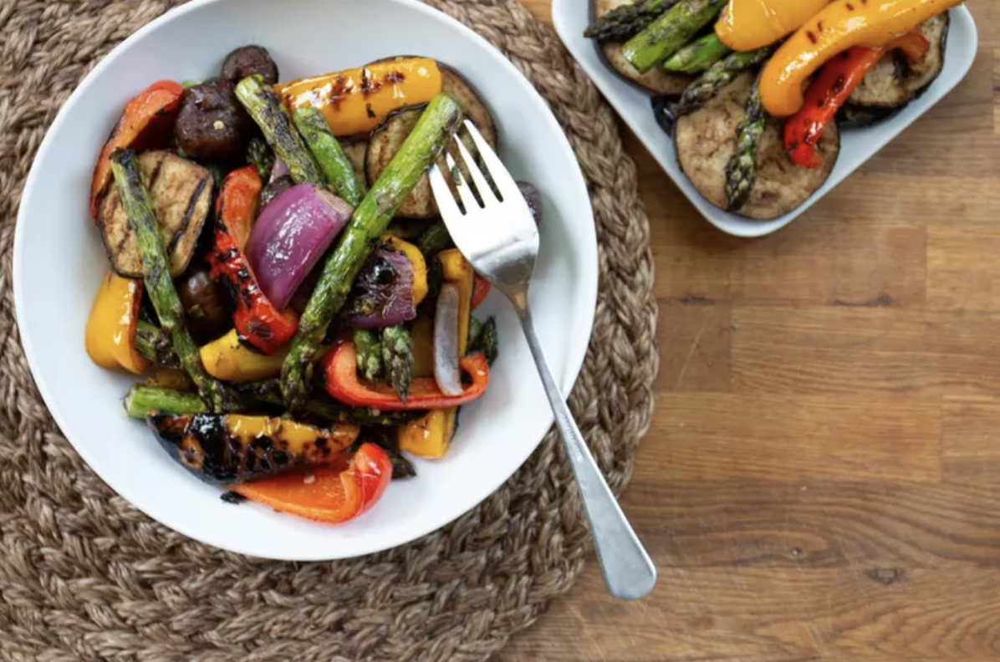

Lasagna

A super yummy way to grill veggies.
Ingredients
- 2 tablespoons olive oil
- 2 tablespoons chopped fresh parsley
- 2 tablespoons chopped fresh oregano
- 2 tablespoons chopped fresh basil
- 1 tablespoon balsamic vinegar
- 1 teaspoon kosher salt
- ½ teaspoon black pepper
- 6 cloves garlic, minced
- 1 red onion, cut into wedges
- 18 spears fresh asparagus, trimmed
- 12 crimini mushrooms, stems removed
- 1 (1 pound) eggplant, sliced into 1/4 inch rounds
- 1 red bell pepper, cut into wedges
- 1 yellow bell pepper, cut into wedges
Steps
- In a large resealable plastic bag, mix the olive oil, parsley, oregano, basil, vinegar, kosher salt, pepper, and garlic.
Place the onion, asparagus, mushrooms, eggplant, red bell pepper, and yellow bell pepper into the bag.
Seal, and marinate 2 hours in the refrigerator, turning occasionally
- Preheat the grill for high heat.
- Lightly oil the grill grate. Grill the vegetables 6 minutes on each side, until tender.
Lovely tip
Serve it with soy sauce or balsamic vinegar!